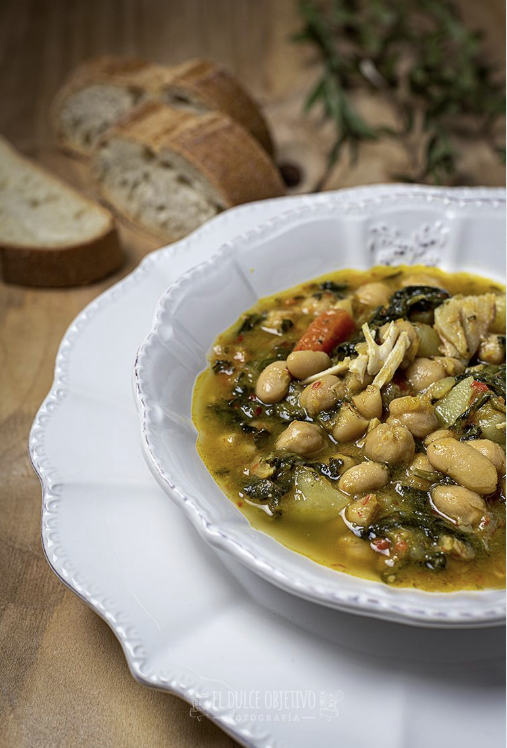

POTAJE DE GARBANZOS Y BACALAO
Ingredientes para 4 raciones:
- 320 gr. de garbanzos.
- 150 gr de habichuelas blancas.
- 1 cebolla.
- 1 cabeza de ajos.
- 1 pimiento verde.
- 1 pimiento choricero o rojo en su defecto.
- 1 hoja de laurel.
- 1 tomate.
- 250 gr. de espinacas frescas.
- 1 zanahoria.
- 1 trozo de calabaza o calabacín.
- 4 trozos de bacalao.
- 2 patatas.
- Sal al gusto.
- Una pizca de pimienta.
- 1 cucharada de cúrcuma o de especias amarillas.
- Aceite de oliva.
Preparación:
- La noche anterior pondremos los garbanzos y las habichuelas en agua.
- Ponemos nuestra olla express al fuego con un chorro de aceite de oliva.
- Rehogamos ligeramente los garbanzos y las habichuelas.
- Añadimos las verduras enteras, son trocear, la cebolla, el pimiento verde, el pimiento choricero, la hoja de laurel, el tomate, la cabeza de ajos, y lo cubrimos con agua.
- Salpimentamos al gusto, mejor poco para luego poder rectificar, y ponemos la cúrcuma. Tapamos y cuando la valvula empiece a girar contamos unos 40 minutos.
- Pasado este tiempo esperamos para poder abrir.
- Pelamos y chascamos la patata, hacemos lo mismo con la calabaza y lo ponemos en la olla, junto con el bacalao y las espinacas.
- Volvemos a tapar y la tendremos dando vueltas otras 20 minutos.
- Pasado este tiempo y habiendo dejado que evapore para poder abrirla, retiramos la cabeza de ajos y el laurel.
- Las verduras, como son la cebolla, los pimientos, el tomate los trituramos, pasándolos por el pasapuré o chino, y los vertemos de nuevo.
- Para que coja algo de cuerpo y evapore agua, a fuego suave, y con cuidado de que no se pegue, la dejaremos haciendo chup chup un ratito.
